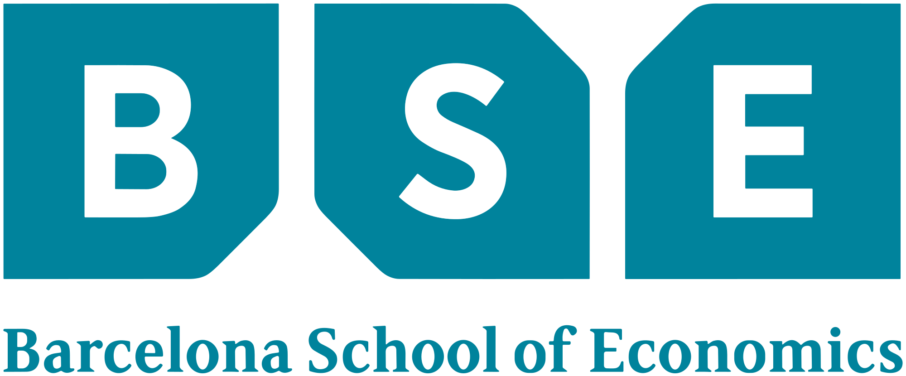
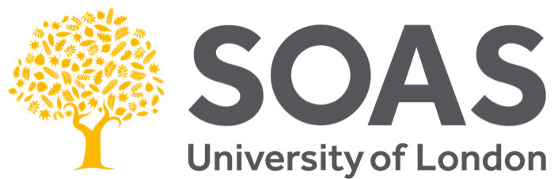

Background
Experience
Doctoral Research — AI for Evidence-Informed Policymaking
University College London — STEaPP, Faculty of Engineering Sciences
2021 – 2026 · Thesis submitted · Defence October 2026 · Elsevier Full Scholarship
Built an NLP pipeline processing 353K speeches and 2,529 briefings, developed the EPAS framework, benchmarked nine LLMs, and created an interactive evidence tracker with parliamentary research services.

Visiting Researcher
University of Zurich — Department of Political Science (IPZ)
2025 – 2026
Comparative research on evidence use in the UK and Swiss parliaments with the UZH–ETH DemocraSci team and the ETH Swiss Data Science Center. Extended EPAS to Swiss parliamentary debates.
Senior Parliamentary Researcher
UK House of Lords
2022 – 2023
Lead Coordinator of the All-Party Parliamentary Group (APPG) on the Metaverse and Web 3.0. Organised international evidence sessions, initiated a youth forum on AI and emerging technologies, supported the drafting of relevant bills, and authored speeches and reports.
Parliamentary Researcher
UK House of Lords
2014 – 2022
Eight years of parliamentary research, policy analysis, and legislative support across multiple policy areas.

Teaching Assistant — Business and Human Rights
Johns Hopkins School of Advanced International Studies (SAIS)
2021
Created presentations, infographics, exercises, and assessment materials. Increased student participation and engagement.
GAP
Geopolitical Analyst (Intern)
Gatehouse Advisory Partners
2020
Education
PhD, AI for Evidence-Informed Policymaking
University College London — STEaPP, Faculty of Engineering Sciences
2021 – 2026 · Completed and submitted · Defence October 2026 · Elsevier Full Scholarship
Supervised by Dr Chris Tyler and Dr Andrew Plume

Data Science Summer School
Barcelona School of Economics
2022 · Python, R, Deep Learning, Text as Data
MA, International Economics & International Law
Johns Hopkins School of Advanced International Studies (SAIS)

MA, International Studies & Diplomacy
SOAS, University of London
BA (Hons), International Relations
SOAS, University of London
2016 – 2019